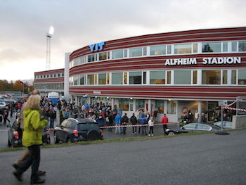

How do I get to FestiFall?
FestiFall is held in the open fields of Alfheim Stadium. We're not that difficult to find, but you can find directions to us below on Google Maps.
Directions from the Tromsø Airport, Langnes
Follow Flyplassvegen for 350m
Follow Rv862 and Kvaløyvegen for 1.8km to Langnesvegen
Continue on Langnesvegen. Drive to Stadionvegen for 2.7km
Exit the roundabout onto Langnesvegen, continue for 1.9km.
Turn RIGHT onto Kirkegårdsvegen, continue for 290m
Then turn LEFT to stay on Kirkegårdsvegen for 220m
Turn right onto Oscar Larsens veg, stay on it for 180m
Turn left onto Stadionvegen and the Stadium will be on the right.
Alfheim Stadium
Stadionvegen 3
9007 Tromsø
Norway